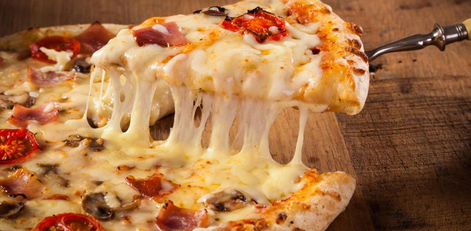

Pizza casera

Descripcion
Cómo están mis queridos amigos? Bienvenidos a otra edición de Paulina Cocina. Hoy les traigo una excelente receta, especialmente para los que les gusta evitar el delívery y preparar la pizza en casa pero no saben cómo hacer masa para pizza.
Hay tantas recetas de pizza como personas en este mundo y eso nos marea un poco. Cada uno tiene su truco y su forma de hacerla y todos creen que son los mejores, pues no es así. En este posteo les traigo 5 consejos para hacer la masa para pizza más rica del condado. Esto está chequeado por el M.I.T. eh! Pueden chequearlo en google si quieren. Si quieren ver más recetas pueden seguirme en mi canal de Youtube, subo un montón de cosas buenísimas!
Ingredientes
- 1/2 kilo de harina 000
- 25 gr de pan de levadura fresco
- 1/2 cucharada de sal
- 4 cdas de aceite de oliva
- 1 cda de azúcar
- 1 taza de agua tibia
Pasos
- En un bol o taza colocar la levadura y media taza de agua tibia, agregar la cucharada de azúcar. Mezclar bien hasta que se formen burbujitas. Tapar con un nylon y dejar levar mas o menos 10 minutos.
- En otro bol, colocar la harina y mezclarla con la sal. Hacer un hueco en el centro, y luego volcar la media taza de agua con la levadura. Incorporar el resto del agua tibia. Unir con las manos todos los ingredientes hasta formar una masa. Agregar en forma de hilo el aceite y volver a amasar.
- Dejar descansar la masa para pizza unos 15 minutos, y luego amasarla en una mesa con harina. Dividir la masa en dos bollos del mismo tamaño.
- Estirar la masa hasta lograr un círculo. Poner la masa en una fuente para pizza, dejar descansar en lugar templado hasta que leve un poquito. Aproximadamente 15 minutos.
- Llevar a un horno fuerte unos 6 minutos. Esto es muy importante para que la masa para pizza quede bien cocida (principalmente la parte entre los ingredientes y la masa, si salteamos este punto quedará húmeda y cruda).
- Agregar una cucharada abundante de salsa de tomate y llevar al horno 2 minutos más.